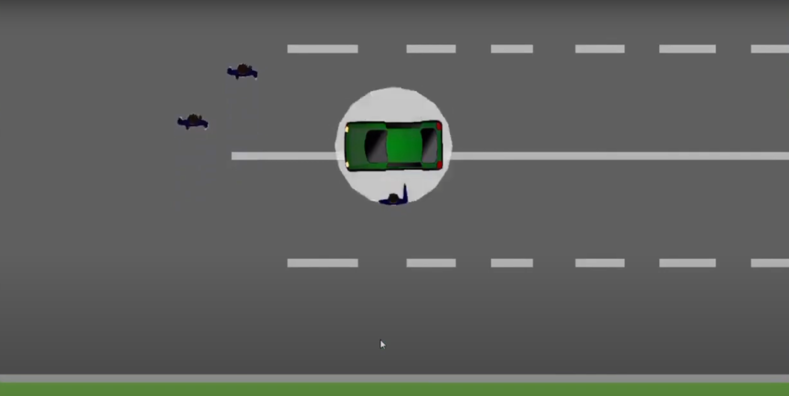

Olá, eu sou Jefferson Lucas
Desenvolvedor Front-End and Back-End | Entusiasta de Tecnologia
Minhas Habilidades
Sobre
Olá, sou Jefferson Lucas, um desenvolvedor apaixonado por tecnologia, especializado tanto em Front-End quanto em Back-End. Desde que comecei minha jornada na programação, venho buscando constantemente novas formas de criar soluções inovadoras e eficientes para a web. Com uma forte base em HTML, CSS, JavaScript, Python, e MySQL, tenho me dedicado a aprimorar minhas habilidades e aprender novas ferramentas e tecnologias.
Acredito no poder da colaboração e da inovação, e é isso que me impulsiona a construir projetos que vão além do simples código. Meu foco está em criar interfaces intuitivas, experiências imersivas e sistemas robustos que atendam às necessidades dos usuários de forma prática e eficaz.
Seja desenvolvendo sites, criando jogos simples, ou explorando o universo da programação, minha missão é sempre evoluir, aprender e transformar ideias em realidade. Eu sou movido por desafios e, sempre que possível, compartilho meus projetos e conhecimentos com a comunidade de desenvolvedores. Se você tem um projeto interessante ou precisa de ajuda para transformar suas ideias em soluções digitais, não hesite em entrar em contato comigo!

Meus Projetos
Naruto
é um site focado na vida de Naruto Uzumaki, desde sua infância difícil até seu crescimento como Hokage. Explore sua história, desafios, conquistas e relacionamentos ao longo da jornada.
Meu Site GitHubSuper Mario Bros
é uma versão simples do Mario, onde o personagem pula para evitar obstáculos e alcançar objetivos, tudo no seu navegador.
Meu Site GitHubGrand Theft Auto
é um jogo inspirado no clássico GTA 1, desenvolvido em Python. Nele, o jogador dirige veículos, e explora tudo com gráficos simples e jogabilidade divertida, recriando a experiência do famoso jogo de mundo aberto.
GitHub
Meus Cursos
Programação FullStack
Descrição: Aprendi todas as habilidades e conhecimentos para se tornar um profissional Dev com amplo aspecto. Aprenda Python, Javascript, HTML, CSS, Banco de dados Mysql, React e muito mais. Do front end ao Back end, desenvolvimentos de aplicativos, web, sistemas, inteligência artificial, sistema de gestão ágil e muito mais. Esse curso e feito para quem quer começar e tem interesse de entrar em uma das profissões mais rentáveis do momento.
Instituição: Infinty School
Duração: 13 meses